AI fills in the rest.
Add a title and get a description, category, allergens and a shelf-life note. Use them, or don’t.
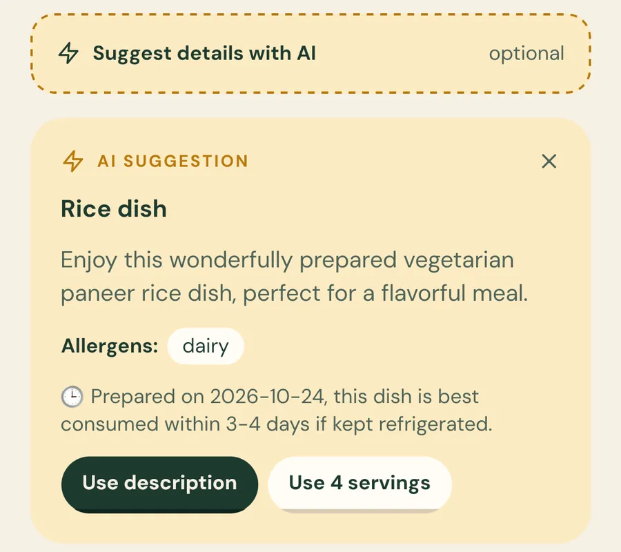
Food Saver for Android
Share surplus meals with NGOs and volunteers near you. Post it in under a minute, and someone nearby picks it up.
Food Saver is on Android for now. On iPhone, use the web app. It’s the same account.
Open the web app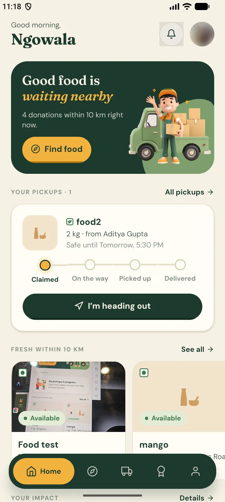
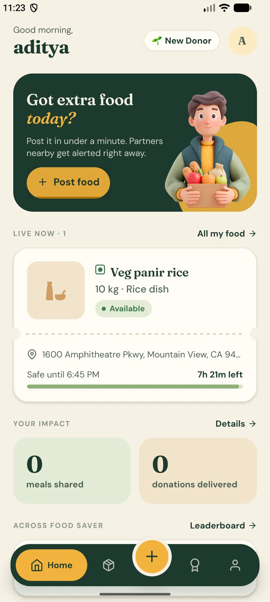
Every evening, good food is thrown out a few streets away from people who’d be glad of it. Food Saver closes that gap with a photo, a pin on the map and a six‑digit code.
Getting started
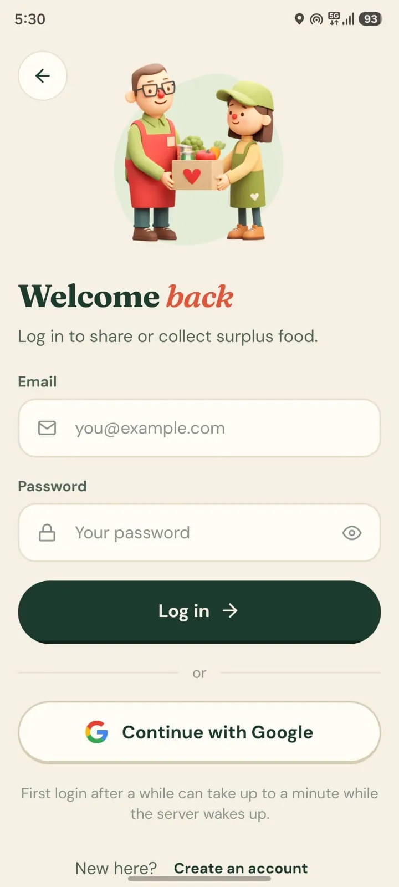
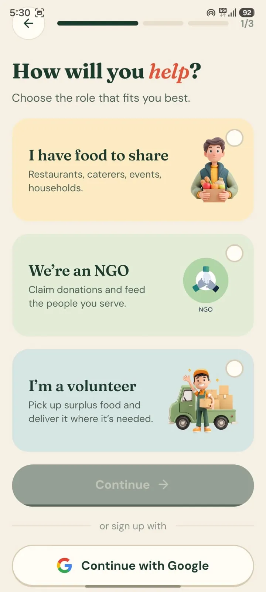
Use your email and a password, or Continue with Google in one tap. First time with Google? Pick a role and you’re in.
How it works
Snap a photo, say how much there is and until when it’s safe to eat. It takes under a minute.
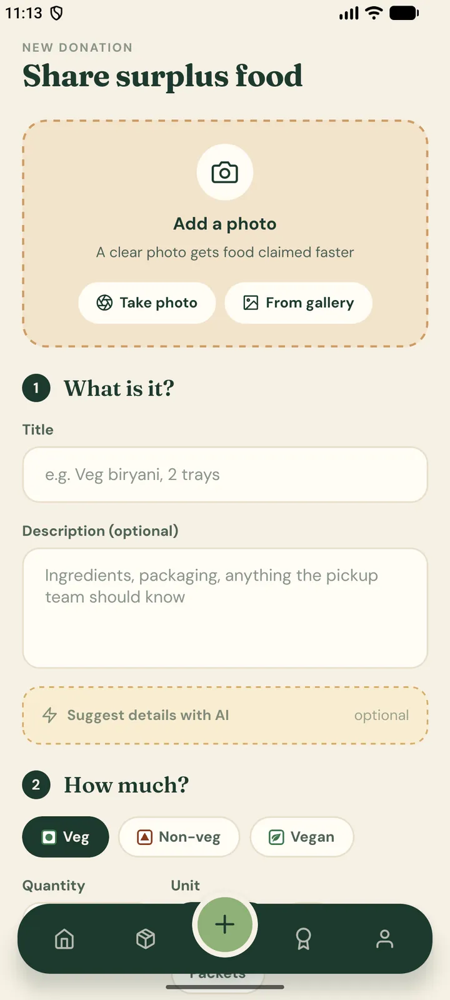
NGOs and volunteers within their chosen radius see it straight away, with a live alert on their home screen.
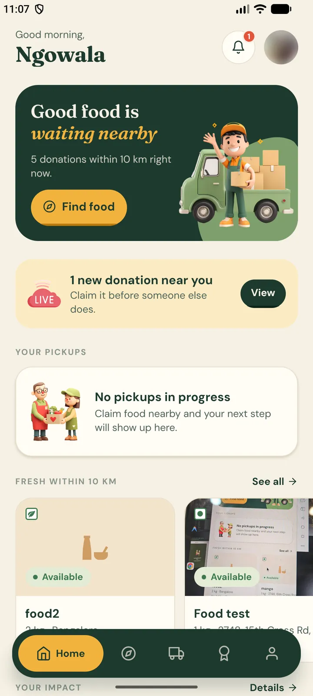
One tap to claim it. The donor sees who’s coming, with their name and number.
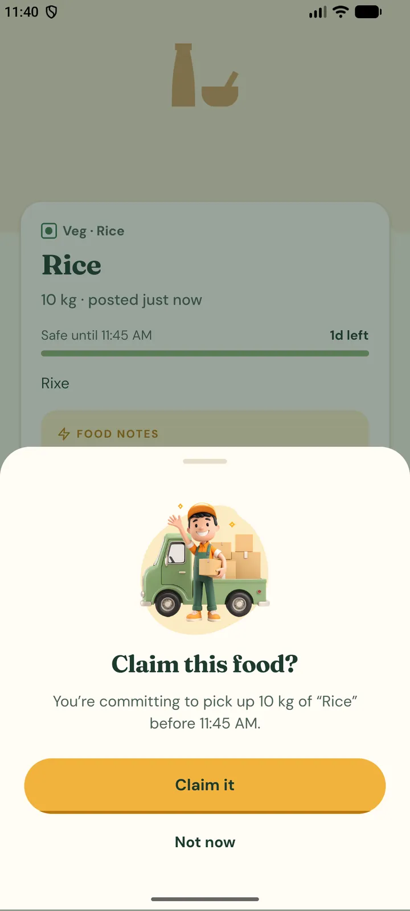
At pickup, the donor reads out a private 6‑digit code. The partner types it in, and the food changes hands.
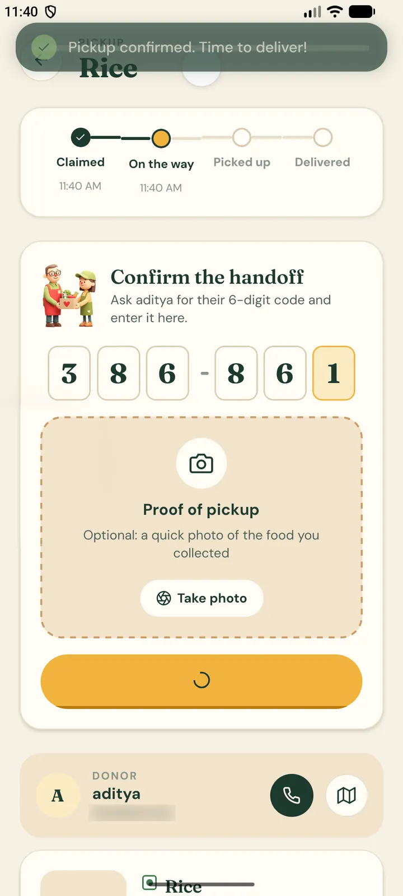
Once it reaches the people it’s meant for, mark it delivered. Both sides see their impact go up.
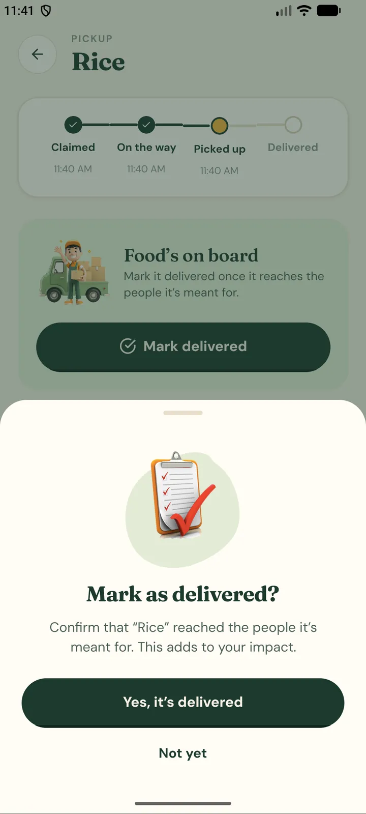
The handoff code
Every claim gets a private six‑digit code that only the donor can see. At pickup the donor says it, the partner enters it. No match, no handoff.
Pickup confirmed. Time to deliver.
The details
Add a title and get a description, category, allergens and a shelf-life note. Use them, or don’t.

Claimed, on the way, picked up, delivered. Live for the donor and the partner.
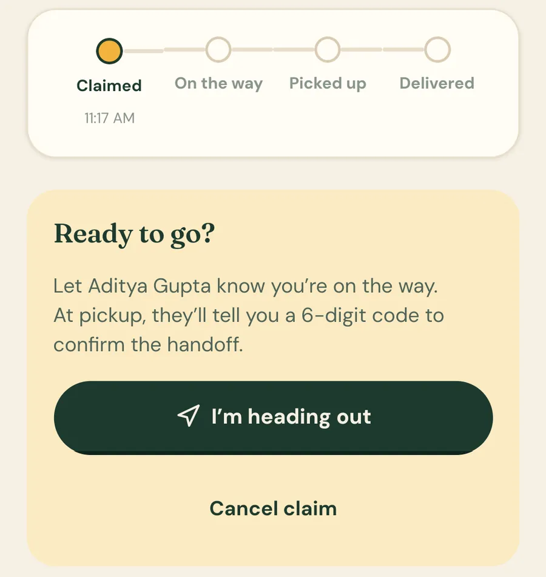
Every listing counts down to its safe-until time, so food goes out while it’s still good.
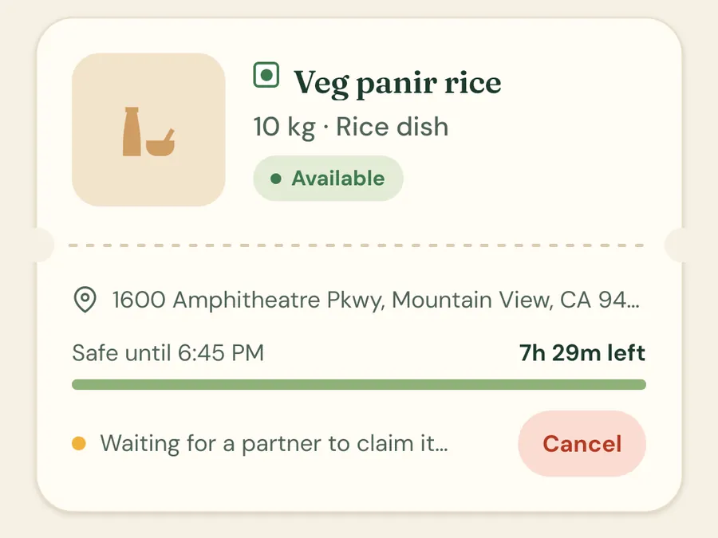
Choose how far you’ll travel. Browse food as a list, or switch to the radar view.
Impact
Meals shared, donations delivered and your all-time rank, with badges as you go. The community leaderboard shows today, this week, this month and all time.
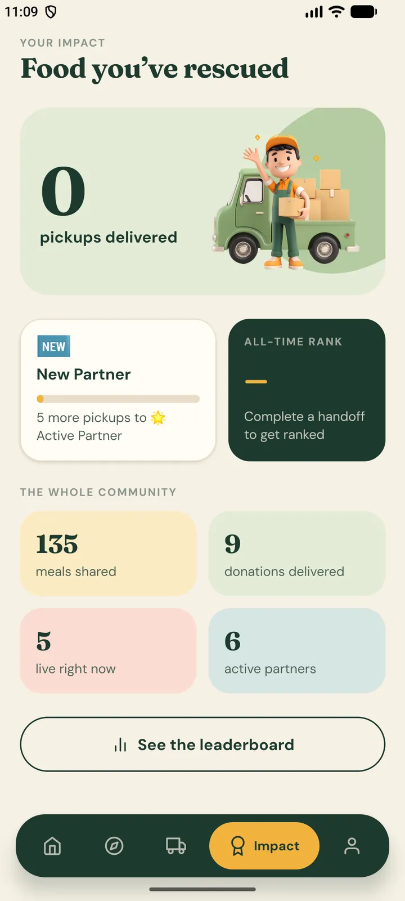
Also on the web
Post, browse and claim from any browser. Same account, same food, same impact.
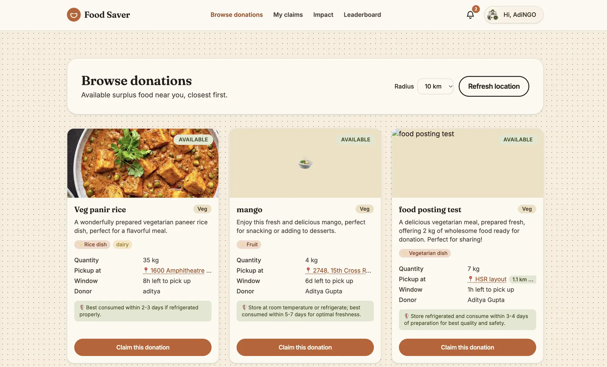
Install
Tap Download for Android. The file is about 57 MB.
Open the file. If Android asks, turn on “Allow from this source” for your browser or Files app.
Open the app, tap Join Food Saver, pick Donor, NGO or Volunteer, and you’re in.
Food Saver isn’t on the Play Store yet, so the app comes straight from us. Your browser may ask you to confirm the download, and Android may warn about apps from outside the Play Store. That’s expected for an APK.
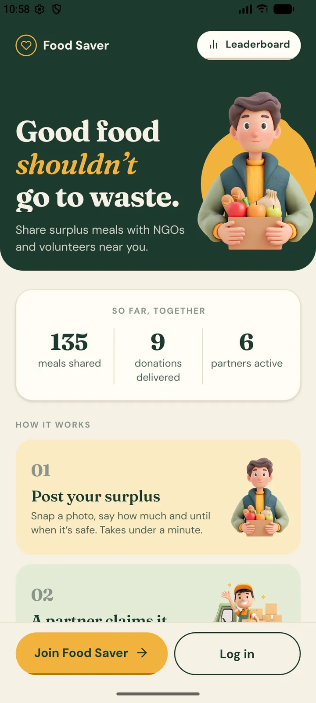
Yes. There’s nothing to pay, for donors, NGOs or volunteers.
Not yet. On iPhone or iPad, use the web app. It’s the same account.
Any phone running Android 7.0 or newer.
Our server sleeps when nobody’s using it. The first request after a quiet spell can take up to a minute; after that it’s quick.
Only the other side of a pickup you’re part of, so the donor and partner can reach each other.
Download the latest version from this page and open it. Your donations and impact are saved to your account, not the phone.
Food Saver is on Android for now. On iPhone, use the web app.
Open the web app